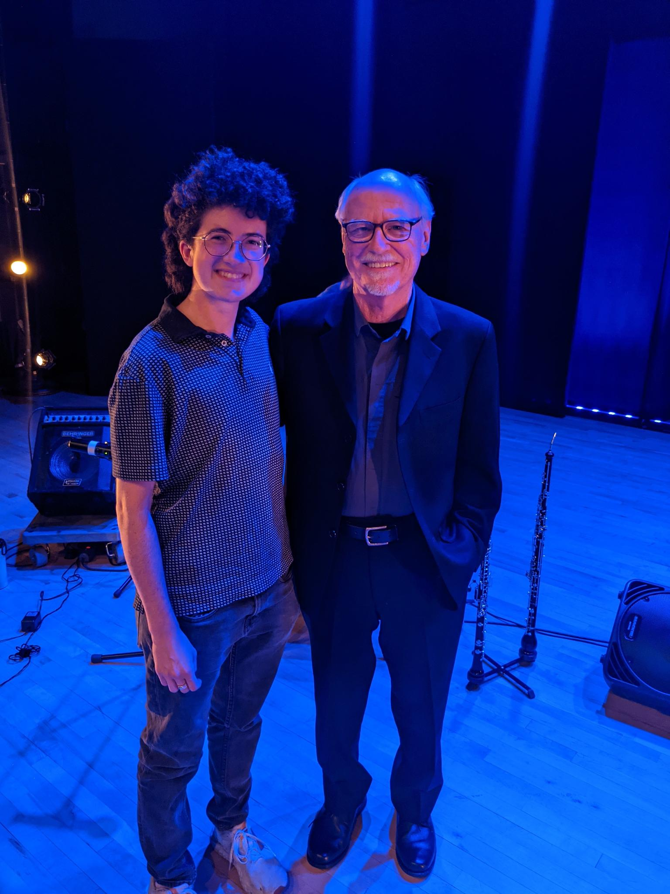

Group project members: Mir Jeffres, Evan Murray, Xinyu Qian, and Shan Jiang
The Hub was an ensemble of music tech innovators that formed in 1986 out of the League of Automatic Music Composers. The members created a system for their computers to communicate via a hub - hence the name - to control various programmatical parameters that would affect their musical output. Their computers communicated via serial at first, and in later implementations of The Hub they used MIDI. We recreated this idea for the modern computer musician using Max, and our computers communicated via UDP and the oscsend/oscreceive objects.
I got to meet John Bischoff, one of the founders of The Hub and the League of Automatic Music Composers when he came to give a concert and a series of lectures in Atlanta in October 2023!!
